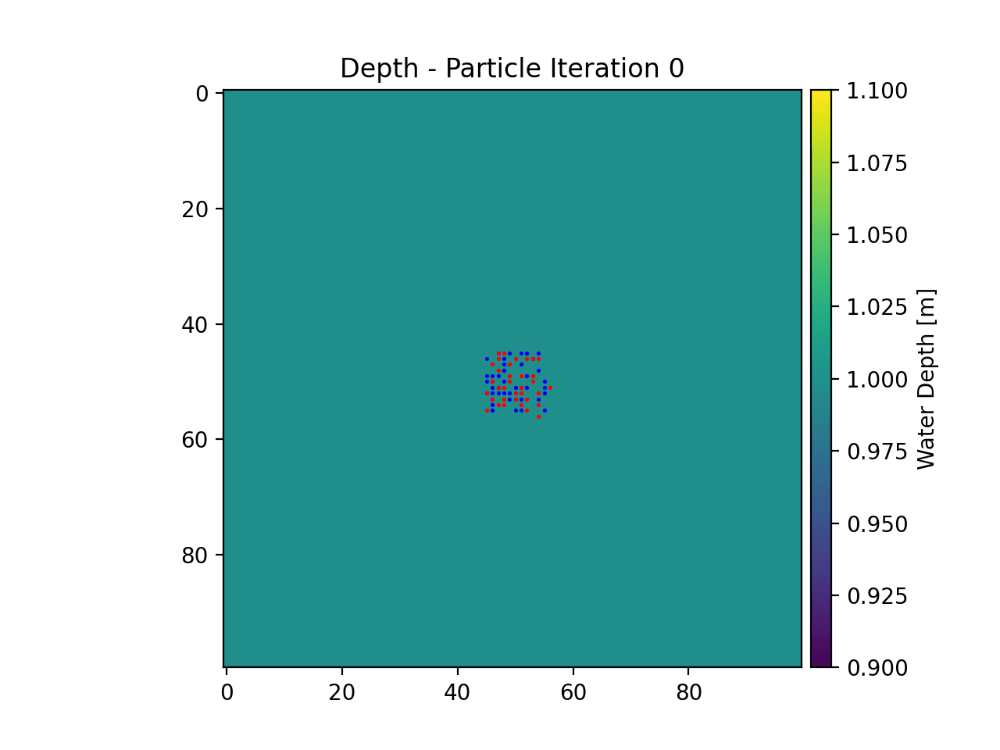

Example 9 - True Random Walk¶
dorado is fundamentally built on the concept of random walks. We can strip away the directed/weighted nature of the particle routing to return to a regular 2-D random walk process. This is what we will do in this example.
Full example script available here.
First we will define our parameters for the unweighted random walk. To do this, we will simulate a constant water depth, and provide no flow information. Then we will set all of our weighting parameters to 0.
We will initialize the dorado.particle_track.Particles class, seed 50 particles in the center of our artificial domain, and then simulate their movement using the steady_plots routine.
If we animate the particle travel information we will get the below plot.
